<!DOCTYPE html>
<html lang="ru">
    <head>
        <meta charset="UTF-8" />
        <meta name="viewport" content="width=device-width, initial-scale=1.0" />
        <meta name="description" content="" />
        <meta name="keywords" content="" />
        <link rel="shortcut icon" href="assets/favicons/favicon.png" type="image/x-icon" />
        <link rel="stylesheet" href="css/style.min.css" />
        <title>Kazimir</title>
    </head>
</html>


<body>
	<header class="header"></header>

	<div class="wrapper">
		<main class="main">
			<h1 class="hidden">Kazimir landing page</h1>

			<section class="hero">
				<div class="container">
					<div class="hero__info">
						Авторы шрифта: Илья Рудерман, Юрий Остроменцкий
					</div>
					<div class="hero__preview">
						
					</div>
					<div class="hero__img">
						
					</div>
				</div>
				<div class="hero__ball"></div>
			</section>

			<section class="about">
				<div class="about__mask-wrapper">
					<div class="about__mask"></div>
				</div>
				<div class="about__content">
					<div class="container">
						<div class="about__info">
							Шрифт, разработанный и&nbsp;уложенный со&nbsp;вкусом. Это рестайлинг книжной типографики рубежа XIX&nbsp;&mdash; ХХ&nbsp;веков. Когда‑то эти линии украшали страницы Марксовского издания &laquo;Истории русской литературы&raquo; П.Н. Полевого, а&nbsp;теперь&nbsp;&mdash; обрели новый блеск и&nbsp;форму
						</div>

						<div class="about__year">
							
						</div>

						<div class="about__info">
							Мы&nbsp;не&nbsp;просто воссоздали гарнитуру, а&nbsp;аккуратно уложили&nbsp;её, сохранив естественные завитки старинных литер и&nbsp;добавив им&nbsp;современный объём. Типографика похожа на&nbsp;тщательно уложеные буквы. Чувство стиля&nbsp;&mdash; в&nbsp;каждом штрихе
						</div>

						<div class="about__i">
							
						</div>
					</div>
				</div>

				<div class="about__data">
					<div class="about__data-item">
						<span>2438</span>
						<span>ГЛИФОВ</span>
					</div>

					<span>•</span>

					<div class="about__data-item">
						<span>10</span>
						<span>начертаний</span>
					</div>

					<span>•</span>


					<div class="about__data-item">
						<span>6</span>
						<span>весов</span>
					</div>
				</div>

				<div class="about__letters">
					<div class="container">
						<div class="about__letters-item about__letters-item--letters">
							<div class="about__letters-preview">
								
							</div>
							<div class="about__letters-preview">
								
							</div>
						</div>
						<div class="about__letters-item about__letters-item--numbers">
							<div class="about__letters-preview">
								
							</div>
							<div class="about__letters-preview">
								
							</div>
						</div>
						<div class="about__letters-decor">
							
						</div>
					</div>
				</div>

				<div class="about__details">
					<div class="container">
						<h2>детали</h2>

						<div class="about__details-preview">
							
						</div>

						<div class="about__details-decor">
							
						</div>
					</div>
				</div>

				<div class="about__langs">
					<div class="container">
						<h2>языки</h2>

						<div class="about__langs-preview">
							
						</div>

						<div class="about__langs-decor">
							
						</div>

						<div class="about__langs-text">
							У&nbsp;шрифта целый гардероб начертаний: пять прямых, пять италиков&nbsp;&mdash; на&nbsp;все случаи жизни. Каждое из&nbsp;них имеет свой характер и&nbsp;форму, будто разные характеры одного и&nbsp;того&nbsp;же героя. Где‑то буквы ложатся идеально ровно, где‑то кокетливо завиваются. Но&nbsp;в&nbsp;любой вариации Kazimir держит стиль&nbsp;&mdash; аккуратный, выразительный, уложенный со&nbsp;вкусом
						</div>
					</div>
				</div>

				<div class="about__styles">
					<div class="about__styles-content">
						
					</div>
				</div>

				<div class="about__styles">
					<div class="about__styles-content about__styles-content--footer">
						
					</div>
				</div>

			</section>
		</main>
		<footer class="footer">
  <div class="container">
    <div class="footer__content">
      
      <span>2025</span>
      <div class="footer__info">
        <span>БП25ДЗ12</span>
        <span>Дарина Курдыш</span>
      </div>
    </div>
  </div>
</footer>

	</div>

</body>

</html>


